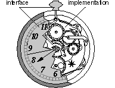
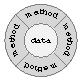
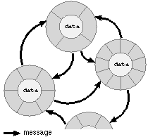
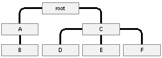
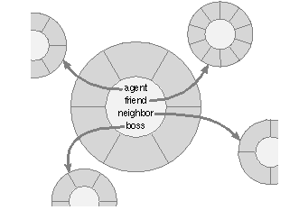

Release 3.3 Copyright ©1995 by NeXT Computer, Inc. All Rights Reserved.
| 1 |
Object-Oriented Programming
| Programming languages have traditionally divided the world into two parts--data and operations on data. Data is static and immutable, except as the operations may change it. The procedures and functions that operate on data have no lasting state of their own; they're useful only in their ability to affect data.
This division is, of course, grounded in the way computers work, so it's not one that you can easily ignore or push aside. Like the equally pervasive distinctions between matter and energy and between nouns and verbs, it forms the background against which we work. At some point, all programmers--even object-oriented programmers--must lay out the data structures that their programs will use and define the functions that will act on the data. With a procedural programming language like C, that's about all there is to it. The language may offer various kinds of support for organizing data and functions, but it won't divide the world any differently. Functions and data structures are the basic elements of design. Object-oriented programming doesn't so much dispute this view of the world as restructure it at a higher level. It groups operations and data into modular units called objects and lets you combine objects into structured networks to form a complete program. In an object-oriented programming language, objects and object interactions are the basic elements of design. Every object has both state (data) and behavior (operations on data). In that, they're not much different from ordinary physical objects. It's easy to see how a mechanical device, such as a pocket watch or a piano, embodies both state and behavior. But almost anything that's designed to do a job does too. Even simple things with no moving parts such as an ordinary bottle combine state (how full the bottle is, whether or not it's open, how warm its contents are) with behavior (the ability to dispense its contents at various flow rates, to be opened or closed, to withstand high or low temperatures). It's this resemblance to real things that gives objects much of their power and appeal. They can not only model components of real systems, but equally as well fulfill assigned roles as components in software systems. |
| Interface and Implementation |
| As humans, we're constantly faced with myriad facts and impressions that we must make sense of. To do so, we have to abstract underlying structure away from surface details and discover the fundamental relations at work. Abstractions reveal causes and effects, expose patterns and frameworks, and separate what's important from what's not. They're at the root of understanding.
To invent programs, you need to be able to capture the same kinds of abstractions and express them in the program design. It's the job of a programming language to help you do this. The language should facilitate the process of invention and design by letting you encode abstractions that reveal the way things work. It should let you make your ideas concrete in the code you write. Surface details shouldn't obscure the architecture of your program. All programming languages provide devices that help express abstractions. In essence, these devices are ways of grouping implementation details, hiding them, and giving them, at least to some extent, a common interface--much as a mechanical object separates its interface from its implementation. |
|  |
| Figure 1. Interface and Implementation
Looking at such a unit from the inside, as the implementor, you'd be concerned with what it's composed of and how it works. Looking at it from the outside, as the user, you're concerned only with what it is and what it does. You can look past the details and think solely in terms of the role that the unit plays at a higher level. The principal units of abstraction in the C language are structures and functions. Both, in different ways, hide elements of the implementation: |
| On the data side of the world, C structures group data elements into larger units which can then be handled as single entities. While some code must delve inside the structure and manipulate the fields separately, much of the program can regard it as a single thing--not as a collection of elements, but as what those elements taken together represent. One structure can include others, so a complex arrangement of information can be built from simpler layers. | ||
| In modern C, the fields of a structure live in their own name space--that is, their names won't conflict with identically-named data elements outside the structure. Partitioning the program name space is essential for keeping implementation details out of the interface. Imagine, for example, the enormous task of assigning a different name to every piece of data in a large program and of making sure new names don't conflict with old ones. | ||
| On the procedural side of the world, functions encapsulate behaviors that can be used repeatedly without being reimplemented. Data elements local to a function, like the fields within a structure, are protected within their own name space. Functions can reference (call) other functions, so quite complex behaviors can be built from smaller pieces. | ||
| Functions are reusable. Once defined, they can be called any number of times without again considering the implementation. The most generally useful functions can be collected in libraries and reused in many different applications. All the user needs is the function interface, not the source code. | ||
| However, unlike data elements, functions aren't partitioned into separate name spaces. Each function must have a unique name. Although the function may be reusable, its name is not. |
| C structures and functions are able to express significant abstractions, but they maintain the distinction between data and operations on data. In a procedural programming language, the highest units of abstraction still live on one side or the other of the data-versus- operations divide. The programs you design must always reflect, at the highest level, the way the computer works. Object-oriented programming languages don't lose any of the virtues of structures and functions. But they go a step further and add a unit capable of abstraction at a higher level, a unit that hides the interaction between a function and its data. Suppose, for example, that you have a group of functions that all act on a particular data structure. You want to make those functions easier to use by, as far as possible, taking the structure out of the interface. So you supply a few additional functions to manage the data. All the work of manipulating the data structure--allocating it, initializing it, getting information from it, modifying values within it, keeping it up to date, and freeing it--is done through the functions. All the user does is call the functions and pass the structure to them. With these changes, the structure has become an opaque token that other programmers never need to look inside. They can concentrate on what the functions do, not how the data is organized. You've taken the first step toward creating an object. The next step is to give this idea support in the programming language and completely hide the data structure so that it doesn't even have to be passed between the functions. The data becomes an internal implementation detail; all that's exported to users is a functional interface. Because objects completely encapsulate their data (hide it), users can think of them solely in terms of their behavior. With this step, the interface to the functions has become much simpler. Callers don't need to know how they're implemented (what data they use). It's fair now to call this an "object." The hidden data structure unites all of the functions that share it. So an object is more than a collection of random functions; it's a bundle of related behaviors that are supported by shared data. To use a function that belongs to an object, you first create the object (thus giving it its internal data structure), then tell the object which function it should invoke. You begin to think in terms of what the object does, rather than in terms of the individual functions. This progression from thinking about functions and data structures to thinking about object behaviors is the essence of object-oriented programming. It may seem unfamiliar at first, but as you gain experience with object-oriented programming, you'll find it's a more natural way to think about things. Everyday programming terminology is replete with analogies to real-world objects of various kinds--lists, containers, tables, controllers, even managers. Implementing such things as programming objects merely extends the analogy in a natural way. A programming language can be judged by the kinds of abstractions that it enables you to encode. You shouldn't be distracted by extraneous matters or forced to express yourself using a vocabulary that doesn't match the reality you're trying to capture. If, for example, you must always tend to the business of keeping the right data matched with the right procedure, you're forced at all times to be aware of the entire program at a low level of implementation. While you might still invent programs at a high level of abstraction, the path from imagination to implementation can become quite tenuous--and more and more difficult as programs become bigger and more complicated. By providing another, higher level of abstraction, object-oriented programming languages give you a larger vocabulary and a richer model to program in. |
| The Object Model |
| The insight of object-oriented programming is to combine state and behavior--data and operations on data--in a high-level unit, an object, and to give it language support. An object is a group of related functions and a data structure that serves those functions. The functions are known as the object's methods, and the fields of its data structure are its instance variables. The methods wrap around the instance variables and hide them from the rest of the program: |
|  |
| Figure 2. An Object
Likely, if you've ever tackled any kind of difficult programming problem, your design has included groups of functions that work on a particular kind of data--implicit "objects" without the language support. Object-oriented programming makes these function groups explicit and permits you to think in terms of the group, rather than its components. The only way to an object's data, the only interface, is through its methods. |
| Terminology
Object-oriented terminology varies from language to language. For example, in C++ methods are called "member functions" and instance variables are "data members." This manual uses the terminology of Objective C, which has its basis in Smalltalk. |
| By combining both state and behavior in a single unit, an object becomes more than either alone; the whole really is greater than the sum of its parts. An object is a kind of self-sufficient "subprogram" with jurisdiction over a specific functional area. It can play a full-fledged modular role within a larger program design.
For example, if you were to write a program that modeled home water usage, you might invent objects to represent the various components of the water-delivery system. One might be a Faucet object that would have methods to start and stop the flow of water, set the rate of flow, return the amount of water consumed in a given period, and so on. To do this work, a Faucet object would need instance variables to keep track of whether the tap is open or shut, how much water is being used, and where the water is coming from. Clearly, a programmatic Faucet can be smarter than a real one (it's analogous to a mechanical faucet with lots of gauges and instruments attached). But even a real faucet, like any system component, exhibits both state and behavior. To effectively model a system, you need programming units, like objects, that also combine state and behavior. A program consists of a network of interconnected objects that call upon each other to solve a part of the puzzle. Each object has a specific role to play in the overall design of the program and is able to communicate with other objects. Objects communicate through messages, requests to perform a method. |
|  |
| Figure 3. Object Network
The objects in the network won't all be the same. For example, in addition to Faucets, the program that models water usage might also have WaterPipe objects that can deliver water to the Faucets and Valve objects to regulate the flow among WaterPipes. There could be a Building object to coordinate a set of WaterPipes, Valves, and Faucets, some Appliance objects--corresponding to dishwashers, toilets, and washing machines--that can turn Valves on and off, and maybe some Users to work the Appliances and Faucets. When a Building object is asked how much water is being used, it might call upon each Faucet and Valve to report its current state. When a User starts up an Appliance, the Appliance will need to turn on a Valve to get the water it requires.
The Messaging Metaphor Every programming paradigm comes with its own terminology and metaphors. None more so than object-oriented programming. Its jargon invites you to think about what goes on in a program from a particular perspective. There's a tendency, for example, to think of objects as "actors" and to endow them with human-like intentions and abilities. It's tempting sometimes to talk about an object "deciding" what to do about a situation, "asking" other objects for information, "introspecting" about itself to get requested information, "delegating" responsibility to another object, or "managing" a process. Rather than think in terms of functions or methods doing the work, as you would in a procedural programming language, this metaphor asks you to think of objects as "performing" their methods. Objects are not passive containers for state and behavior, but are said to be the agents of the program's activity. This is actually a useful metaphor. An object is like an actor in a couple of respects: It has a particular role to play within the overall design of the program, and within that role it can act fairly independently of the other parts of the program. It interacts with other objects as they play their own roles, but is self-contained and to a certain extent can act on its own. Like an actor on stage, it can't stray from the script, but the role it plays it can be multi-faceted and quite complex. The idea of objects as actors fits nicely with the principal metaphor of object-oriented programming--the idea that objects communicate through "messages." Instead of calling a method as you would a function, you send a message to an object requesting it to perform one of its methods. Although it can take some getting used to, this metaphor leads to a useful way of looking at methods and objects. It abstracts methods away from the particular data they act on and concentrates on behavior instead. For example, in an object-oriented programming interface, a start method might initiate an operation, a write method might archive information, and a draw method might produce an image. Exactly which operation is initiated, which information is archived, and which image is drawn isn't revealed by the method name. Different objects might perform these methods in different ways. Thus, methods are a vocabulary of abstract behaviors. To invoke one of those behaviors, you have to make it concrete by associating the method with an object. This is done by naming the object as the "receiver" of a message. The object you choose as receiver will determine the exact operation that's initiated, the data that's archived, or the image that's drawn. Since methods belong to objects, they can be invoked only through a particular receiver (the owner of the method and of the data structure the method will act on). Different receivers can have different implementations of the same method, so different receivers can do different things in response to the same message. The result of a message can't be calculated from the message or method name alone; it also depends on the object that receives the message. By separating the message (the requested behavior) from the receiver (the owner of a method that can respond to the request), the messaging metaphor perfectly captures the idea that behaviors can be abstracted away from their particular implementations.
Classes A program can have more than one object of the same kind. The program that models water usage, for example, might have several Faucets and WaterPipes and perhaps a handful of Appliances and Users. Objects of the same kind are said to belong to the same class. All members of a class are able to perform the same methods and have matching sets of instance variables. They also share a common definition; each kind of object is defined just once. In this, objects are similar to C structures. Declaring a structure defines a type. For example, this declaration |
 struct key {
struct key {
 char *word;
char *word;
 int count;
int count;
 };
};
| defines the struct key type. Once defined, the structure name can be used to produce any number of instances of the type: |
 struct key a, b, c, d;
struct key a, b, c, d;
 struct key *p = malloc(sizeof(struct key) * MAXITEMS);
struct key *p = malloc(sizeof(struct key) * MAXITEMS);
| The declaration is a template for a kind of structure, but it doesn't create a structure that the program can use. It takes another step to allocate memory for an actual structure of that type, a step that can be repeated any number of times.
Similarly, defining an object creates a template for a kind of object. It defines a class of objects. The template can be used to produce any number of similar objects--instances of the class. For example, there would be a single definition of the Faucet class. Using this definition, a program could allocate as many Faucet instances as it needed. A class definition is like a structure definition in that it lays out an arrangement of data elements (instance variables) that become part of every instance. Each instance has memory allocated for its own set of instance variables, which store values peculiar to the instance. However, a class definition differs from a structure declaration in that it also includes methods that specify the behavior of class members. Every instance is characterized by its access to the methods defined for the class. Two objects with equivalent data structures but different methods would not belong to the same class. |
| Access to Methods
It's convenient to think of methods as being part of an object, just as instance variables are. As in Figure 2 above, methods can be diagrammed as surrounding the object's instance variables. But, of course, methods aren't grouped with instance variables in memory. Memory is allocated for the instance variables of each new object, but there's no need to allocate memory for methods. All an instance needs is access to its methods, and all instances of the same class share access to the same set of methods. There's only one copy of the methods in memory, no matter how many instances of the class are created. |
| Modularity
To a C programmer, a "module" is nothing more than a file containing source code. Breaking a large (or even not-so-large) program into different files is a convenient way of splitting it into manageable pieces. Each piece can be worked on independently and compiled alone, then integrated with other pieces when the program is linked. Using the static storage class designator to limit the scope of names to just the files where they're declared enhances the independence of source modules. This kind of module is a unit defined by the file system. It's a container for source code, not a logical unit of the language. What goes into the container is up to each programmer. You can use them to group logically related parts of the code, but you don't have to. Files are like the drawers of a dresser; you can put your socks in one drawer, underwear in another, and so on, or you can use another organizing scheme or simply choose to mix everything up. Object-oriented programming languages support the use of file containers for source code, but they also add a logical module to the language--class definitions. As you'd expect, it's often the case that each class is defined in its own source file--logical modules are matched to container modules. In Objective C, for example, it would be possible to define the part of the Valve class that interacts with WaterPipes in the same file that defines the WaterPipe class, thus creating a container module for WaterPipe-related code and splitting the Valve class into more than one file. The Valve class definition would still act as a modular unit within the construction of the program--it would still be a logical module--no matter how many files the source code was located in. The mechanisms that make class definitions logical units of the language are discussed in some detail under "Mechanisms of Abstraction" below.
Reusability A principal goal of object-oriented programming is to make the code you write as reusable as possible--to have it serve many different situations and applications--so that you can avoid reimplementing, even if in only slightly different form, something that's already been done. Reusability is influenced by a variety of different factors, including: |
| How reliable and bug-free the code is | ||
| How clear the documentation is | ||
| How simple and straightforward the programming interface is | ||
| How efficiently the code performs its tasks | ||
| How full the feature set is |
| Clearly, these factors don't apply just to the object model. They can be used to judge the reusability of any code--standard C functions as well as class definitions. Efficient and well documented functions, for example, would be more reusable than undocumented and unreliable ones.
Nevertheless, a general comparison would show that class definitions lend themselves to reusable code in ways that functions do not. There are various things you can do to make functions more reusable--passing data as arguments rather than assuming specifically-named global variables, for example. Even so, it turns out that only a small subset of functions can be generalized beyond the applications they were originally designed for. Their reusability is inherently limited in at least three ways: |
| Function names are global variables; each function must have a unique name (except for those declared static). This makes it difficult to rely heavily on library code when building a complex system. The programming interface would be hard to learn and so extensive that it couldn't easily capture significant generalizations. | ||
| Classes, on the other hand, can share programming interfaces. When the same naming conventions are used over and over again, a great deal of functionality can be packaged with a relatively small and easy-to-understand interface. | ||
| Functions are selected from a library one at a time. It's up to programmers to pick and choose the individual functions they need. | ||
| In contrast, objects come as packages of functionality, not as individual methods and instance variables. They provide integrated services, so users of an object-oriented library won't get bogged down piecing together their own solutions to a problem. | ||
| Functions are typically tied to particular kinds of data structures devised for a specific program. The interaction between data and function is an unavoidable part of the interface. A function is useful only to those who agree to use the same kind of data structures it accepts as arguments. | ||
| Because it hides its data, an object doesn't have this problem. This is one of the principal reasons why classes can be reused more easily than functions. |
| An object's data is protected and won't be touched by any other part of the program. Methods can therefore trust its integrity. They can be sure that external access hasn't put it in an illogical or untenable state. This makes an object data structure more reliable than one passed to a function, so methods can depend on it more. Reusable methods are consequently easier to write.
Moreover, because an object's data is hidden, a class can be reimplemented to use a different data structure without affecting its interface. All programs that use the class can pick up the new version without changing any source code; no reprogramming is required.
Mechanisms of Abstraction To this point, objects have been introduced as units that embody higher-level abstractions and as coherent role-players within an application. However, they couldn't be used this way without the support of various language mechanisms. Two of the most important mechanisms are: |
| Encapsulation, and | ||
| Polymorphism. |
| Encapsulation keeps the implementation of an object out of its interface, and polymorphism results from giving each class its own name space. The following sections discuss each of these mechanisms in turn.
Encapsulation To design effectively at any level of abstraction, you need to be able to leave details of implementation behind and think in terms of units that group those details under a common interface. For a programming unit to be truly effective, the barrier between interface and implementation must be absolute. The interface must encapsulate the implementation--hide it from other parts of the program. Encapsulation protects an implementation from unintended actions and inadvertent access. In C, a function is clearly encapsulated; its implementation is inaccessible to other parts of the program and protected from whatever actions might be taken outside the body of the function. Method implementations are similarly encapsulated, but, more importantly, so are an object's instance variables. They're hidden inside the object and invisible outside it. The encapsulation of instance variables is sometimes also called information hiding. It might seem, at first, that hiding the information in instance variables would constrain your freedom as a programmer. Actually, it gives you more room to act and frees you from constraints that might otherwise be imposed. If any part of an object's implementation could leak out and become accessible or a concern to other parts of the program, it would tie the hands both of the object's implementor and of those who would use the object. Neither could make modifications without first checking with the other. Suppose, for example, that you're interested in the Faucet object being developed for the program that models water use and you want to incorporate it in another program you're writing. Once the interface to the object is decided, you don't have to be concerned as others work on it, fix bugs, and find better ways to implement it. You'll get the benefit of these improvements, but none of them will affect what you do in your program. Because you're depending solely on the interface, nothing they do can break your code. Your program is insulated from the object's implementation. Moreover, although those implementing the Faucet object would be interested in how you're using the class and might try to make sure that it meet your needs, they don't have to be concerned with the way you're writing your code. Nothing you do can touch the implementation of the object or limit their freedom to make changes in future releases. The implementation is insulated from anything that you or other users of the object might do.
Polymorphism This ability of different objects to respond, each in its own way, to identical messages is called polymorphism. Polymorphism results from the fact that every class lives in its own name space. The names assigned within a class definition won't conflict with names assigned anywhere outside it. This is true both of the instance variables in an object's data structure and of the object's methods: |
| Just as the fields of a C structure are in a protected name space, so are an object's instance variables. | ||
| Method names are also protected. Unlike the names of C functions, method names aren't global symbols. The name of a method in one class can't conflict with method names in other classes; two very different classes could implement identically named methods. |
| Method names are part of an object's interface. When a message is sent requesting an object to do something, the message names the method the object should perform. Because different objects can have different methods with the same name, the meaning of a message must be understood relative to the particular object that receives the message. The same message sent to two different objects could invoke two different methods.
The main benefit of polymorphism is that it simplifies the programming interface. It permits conventions to be established that can be reused in class after class. Instead of inventing a new name for each new function you add to a program, the same names can be reused. The programming interface can be described as a set of abstract behaviors, quite apart from the classes that implement them. For example, instead of defining an amountConsumed method for an Appliance object to report the amount of water it uses over a given period of time, an amountDispensedAtFaucet method for a Faucet to report virtually the same thing, and a cumulativeUsage method for the Building object to report the cumulative total for the whole building--requiring programmers to learn three different names for what is conceptually the same operation--each class can simply have a waterUsed method. Polymorphism also permits code to be isolated in the methods of different objects rather than be gathered in a single function that enumerates all the possible cases. This makes the code you write more extensible and reusable. When a new case comes along, you don't have to reimplement existing code, but only add a new class with a new method, leaving the code that's already written alone. For example, suppose you have code that sends a draw message to an object. Depending on the receiver, the message might produce one of two possible images. When you want to add a third case, you don't have to change the message or alter existing code, but merely allow another object to be assigned as the message receiver. |
| Overloading
The terms "polymorphism" and "argument overloading" refer basically to the same thing, but from slightly different points of view. Polymorphism takes a pluralistic point of view and notes that several classes can each have a method with the same name. Argument overloading takes the point of the view of the method name and notes that it can have different effects depending on what kind of object it applies to. Operator overloading is similar. It refers to the ability to turn operators of the language (such as `==' and `+' in C) into methods that can be assigned particular meanings for particular kinds of objects. Objective C implements polymorphism of method names, but not operator overloading. |
| Inheritance
The easiest way to explain something new is to start with something old. If you want to describe what a "schooner" is, it helps if your listeners already know what "sailboat" means. If you want to explain how a harpsichord works, it's best if you can assume your audience has already looked inside a piano, or has seen a guitar played, or at least is familiar with the idea of a "musical instrument." The same is true if want to define a new kind of object; the description is simpler if it can start from the definition of an existing object. With this in mind, object-oriented programming languages permit you to base a new class definition on a class already defined. The base class is called a superclass; the new class is its subclass. The subclass definition specifies only how it differs from the superclass; everything else is taken to be the same. Nothing is copied from superclass to subclass. Instead, the two classes are connected so that the subclass inherits all the methods and instance variables of its superclass, much as you want your listener's understanding of "schooner" to inherit what they already know about sailboats. If the subclass definition were empty (if it didn't define any instance variables or methods of its own), the two classes would be identical (except for their names) and share the same definition. It would be like explaining what a "fiddle" is by saying that it's exactly the same as a "violin." However, the reason for declaring a subclass isn't to generate synonyms, but to create something at least a little different from its superclass. You'd want to let the fiddle play bluegrass in addition to classical music.
Class Hierarchies Any class can be used as a superclass for a new class definition. A class can simultaneously be a subclass of another class and a superclass for its own subclasses. Any number of classes can thus be linked in a hierarchy of inheritance. |
|  |
| Figure 4. Inheritance Hierarchy
As the figure above shows, every inheritance hierarchy begins with a root class that has no superclass. From the root class, the hierarchy branches downward. Each class inherits from its superclass, and through its superclass, from all the classes above it in the hierarchy. Every class inherits from the root class. Each new class is the accumulation of all the class definitions in its inheritance chain. In the example above, class D inherits both from C, its superclass, and the root class. Members of the D class will have methods and instance variables defined in all three classes--D, C, and root. Typically, every class has just one superclass and can have an unlimited number of subclasses. However, in some object-oriented programming languages (though not in Objective C), a class can have more than one superclass; it can inherit through multiple sources. Instead of a single hierarchy that branches downward as shown in Figure 4 above, multiple inheritance lets some branches of the hierarchy (or of different hierarchies) merge.
Subclass Definitions A subclass can make three kinds of changes to the definition it inherits through its superclass: |
| It can expand the class definition it inherits by adding new methods and instance variables. This is the most common reason for defining a subclass. Subclasses always add new methods, and new instance variables if the methods require it. | ||
| It can modify the behavior it inherits by replacing an existing method with a new version. This is done by simply implementing a new method with the same name as one that's inherited. The new version overrides the inherited version. (The inherited method doesn't disappear; it's still valid for the class that defined it and other classes that inherit it.) | ||
| It can refine or extend the behavior it inherits by replacing an existing method with a new version, but still retain the old version by incorporating it in the new method. This is done by sending a message to perform the old version in the body of the new method. Each class in an inheritance chain can contribute part of a method's behavior. In Figure 4, for example, class D might override a method defined in class C and incorporate C's version, while C's version incorporates a version defined in the root class. |
| Subclasses thus tend to fill out a superclass definition, making it more specific and specialized. They add, and sometimes replace, code rather than subtract it. Note that methods generally can't be disinherited and instance variables can't be removed or overridden.
Uses of Inheritance The classic examples of an inheritance hierarchy are borrowed from animal and plant taxonomies. For example, there could a class corresponding to the Pinaceae (pine) family of trees. Its subclasses could be Fir, Spruce, Pine, Hemlock, Tamarack, DouglasFir, and TrueCedar, corresponding to the various genera that make up the family. The Pine class might have SoftPine and HardPine subclasses, with WhitePine, SugarPine, and BristleconePine as subclasses of SoftPine, and PonderosaPine, JackPine, MontereyPine, and RedPine as subclasses of HardPine. There's rarely a reason to program a taxonomy like this, but the analogy is a good one. Subclasses tend to specialize a superclass or adapt it to a special purpose, much as a species specializes a genus. Here are some typical uses of inheritance: |
| Reusing code. If two or more classes have some things in common but also differ in some ways, the common elements can be put in an a single class definition that the other classes inherit. The common code is shared and need only be implemented once. | ||
| For example, Faucet, Valve, and WaterPipe objects, defined for the program that models water use, all need a connection to a water source and they all should be able to record the rate of flow. These commonalities can be encoded once, in a class that the Faucet, Valve, and WaterPipe classes inherit from. A Faucet can be said to be a kind of Valve, so perhaps the Faucet class would inherit most of what it is from Valve, and add very little of its own. | ||
| Setting up a protocol. A class can declare a number of methods that its subclasses are expected to implement. The class might have empty versions of the methods, or it might implement partial versions that are to be incorporated into the subclass methods. In either case, its declarations establish a protocol that all its subclasses must follow. | ||
| When different classes implement similarly named methods, a program is better able to make use of polymorphism in its design. Setting up a protocol that subclasses must implement helps enforce these naming conventions. | ||
| Delivering generic functionality. One implementor can define a class that contains a lot of basic, general code to solve a problem, but doesn't fill in all the details. Other implementors can then create subclasses to adapt the generic class to their specific needs. For example, the Appliance class in the program that models water use might define a generic water-using device that subclasses would turn into specific kinds of appliances. | ||
| Inheritance is thus both a way to make someone else's programming task easier and a way to separate levels of implementation. | ||
| Making slight modifications. When inheritance is used to deliver generic functionality, set up a protocol, or reuse code, a class is devised that other classes are expected to inherit from. But you can also use inheritance to modify classes that aren't intended as superclasses. Suppose, for example, that there's an object that would work well in your program, but you'd like to change one or two things that it does. You can make the changes in a subclass. | ||
| Previewing possibilities. Subclasses can also be used to factor out alternatives for testing purposes. For example, if a class is to be encoded with a particular user interface, alternative interfaces can be factored into subclasses during the design phase of the project. Each alternative can then be demonstrated to potential users to see which they prefer. When the choice is made, the selected subclass can be reintegrated into its superclass. |
| Dynamism
At one time in programming history, the question of how much memory a program would use was settled when the source code was compiled and linked. All the memory the program would ever need was set aside for it as it was launched. This memory was fixed; it could neither grow nor shrink. In hindsight, it's evident what a serious constraint this was. It limited not only how programs were constructed, but what you could imagine a program doing. It constrained design, not just programming technique. Functions (like malloc()) that dynamically allocate memory as a program runs opened possibilities that didn't exist before. Compile-time and link-time constraints are limiting because they force issues to be decided from information found in the programmer's source code, rather than from information obtained from the user as the program runs. Although dynamic allocation removes one such constraint, many others, equally as limiting as static memory allocation, remain. For example, the elements that make up an application must be matched to data types at compile time. And the boundaries of an application are typically set at link time. Every part of the application must be united in a single executable file. New modules and new types can't be introduced as the program runs. Object-oriented programming seeks to overcome these limitations and to make programs as dynamic and fluid as possible. It shifts much of the burden of decision making from compile time and link time to run time. The goal is to let program users decide what will happen, rather than constrain their actions artificially by the demands of the language and the needs of the compiler and linker. Three kinds of dynamism are especially important for object-oriented design: |
| Dynamic typing, waiting until run time to determine the class of an object | ||
| Dynamic binding, determining at run time what method to invoke | ||
| Dynamic loading, adding new components to a program as it runs |
| Dynamic Typing
The compiler typically complains if the code you write assigns a value to a type that can't accommodate it. You might see warnings like these: |
 incompatible types in assignment
incompatible types in assignment
 assignment of integer from pointer lacks a cast
assignment of integer from pointer lacks a cast
| Type checking is useful, but there are times when it can interfere with the benefits you get from polymorphism, especially if the type of every object must be known to the compiler.
Suppose, for example, that you want to send an object a message to perform the start method. Like other data elements, the object is represented by a variable. If the variable's type (its class) must be known at compile time, it would be impossible to let run-time factors influence the decision about what kind of object should be assigned to the variable. If the class of the variable is fixed in source code, so is the version of start that the message invokes. If, on the other hand, it's possible to wait until run time to discover the class of the variable, any kind of object could be assigned to it. Depending on the class of the receiver, the start message might invoke different versions of the method and produce very different results. Dynamic typing thus gives substance to dynamic binding (discussed next). But it does more than that. It permits associations between objects to be determined at run time, rather than forcing them to be encoded in a static design. For example, a message could pass an object as an argument without declaring exactly what kind of object it is--that is, without declaring its class. The message receiver might then send its own messages to the object, again without ever caring about what kind of object it is. Because the receiver uses the object it's passed to do some of its work, it is in a sense customized by an object of indeterminate type (indeterminate in source code, that is, not at run time).
Dynamic Binding In standard C, you can declare a set of alternative functions, like the standard string-comparison functions, |
 int strcmp(const char *, const char *); /* case sensitive */
int strcmp(const char *, const char *); /* case sensitive */
 int strcasecmp(const char *, const char *); /* case insensitive */
int strcasecmp(const char *, const char *); /* case insensitive */
| and declare a pointer to a function that has the same return and argument types: |
 int (* compare)(const char *, const char *);
int (* compare)(const char *, const char *);
| You can then wait until run time to determine which function to assign to the pointer, |
 if ( **argv == 'i' )
if ( **argv == 'i' )
 compare = strcasecmp;
compare = strcasecmp;
 else
else
 compare = strcmp;
compare = strcmp;
| and call the function through the pointer: |
 if ( compare(s1, s2) )
if ( compare(s1, s2) )
 . . .
. . .
| This is akin to what in object-oriented programming is called dynamic binding, delaying the decision of exactly which method to perform until the program is running.
Although not all object-oriented languages support it, dynamic binding can be routinely and transparently accomplished through messaging. You don't have to go through the indirection of declaring a pointer and assigning values to it as shown in the example above. You also don't have to assign each alternative procedure a different name. Messages invoke methods indirectly. Every message expression must find a method implementation to "call." To find that method, the messaging machinery must check the class of the receiver and locate its implementation of the method named in the message. When this is done at run time, the method is dynamically bound to the message. When it's done by the compiler, the method is statically bound. Dynamic binding is possible even in the absence of dynamic typing, but it's not very interesting. There's little benefit in waiting until run time to match a method to a message when the class of the receiver is fixed and known to the compiler. The compiler could just as well find the method itself; the run-time result won't be any different. However, if the class of the receiver is dynamically typed, there's no way for the compiler to determine which method to invoke. The method can be found only after the class of the receiver is resolved at run time. Dynamic typing thus entails dynamic binding. Dynamic typing also makes dynamic binding interesting, for it opens the possibility that a message might have very different results depending on the class of the receiver. Run-time factors can influence the choice of receiver and the outcome of the message. Dynamic typing and binding also open the possibility that the code you write can send messages to objects not yet invented. If object types don't have to be decided until run time, you can give others the freedom to design their own classes and name their own data types, and still have your code send messages to their objects. All you need to agree on are the messages, not the data types. Note: Dynamic binding is routine in Objective C. You don't need to arrange for it specially, so your design never needs to bother with what's being done when. |
| Late Binding
Some object-oriented programming languages (notably C++) require a message receiver to be statically typed in source code, but don't require the type to be exact. An object can be typed to its own class or to any class that it inherits from. The compiler therefore can't tell whether the message receiver is an instance of the class specified in the type declaration, an instance of a subclass, or an instance of some more distantly derived class. Since it doesn't know the exact class of the receiver, it can't know which version of the method named in the message to invoke. In this circumstance, the choice is between treating the receiver as if it were an instance of the specified class and simply bind the method defined for that class to the message, or waiting until run time to resolve the situation. In C++, the decision is postponed to run time for methods (member functions) that are declared virtual. This is sometimes referred to as "late binding" rather than "dynamic binding." While "dynamic" in the sense that it happens at run time, it carries with it strict compile-time type constraints. As discussed here (and implemented in Objective C), "dynamic binding" is unconstrained. |
| Dynamic Loading
The usual rule has been that, before a program can run, all its parts must be linked together in one file. When it's launched, the entire program is loaded into memory at once. Some object-oriented programming environments overcome this constraint and allow different parts of an executable program to be kept in different files. The program can be launched in bits and pieces as they're needed. Each piece is dynamically loaded and linked with the rest of program as it's launched. User actions can determine which parts of the program are in memory and which aren't. Only the core of a large program needs to be loaded at the start. Other modules can be added as the user requests their services. Modules the user doesn't request make no memory demands on the system. Dynamic loading raises interesting possibilities. For example, an entire program wouldn't have to be developed at once. You could deliver your software in pieces and update one part of it at a time. You could devise a program that groups many different tools under a single interface, and load just the tools the user wants. The program could even offer sets of alternative tools to do the same job. The user would select one tool from the set and only that tool would be loaded. It's not hard to imagine the possibilities. But because dynamic loading is relatively new, it's harder to predict its eventual benefits. Perhaps the most important current benefit of dynamic loading is that it makes applications extensible. You can allow others to add to and customize a program you've designed. All your program needs to do is provide a framework that others can fill in, then at run time find the pieces that they've implemented and load them dynamically. For example, in the NEXTSTEP environment, Interface Builder dynamically loads custom palettes and inspectors, and the Workspace ManagerTMdynamically loads inspectors for particular file formats. Anyone can design their own custom palettes and inspectors that these applications will load and incorporate into themselves. |
| Loading and Linking
Although it's the term commonly used, "dynamic loading" could just as well be called. "dynamic linking." Programs are linked when their various parts are joined so that they can work together; they're loaded when they're read into volatile memory at launch time. Linking usually precedes loading. Dynamic loading refers to the process of separately loading new or additional parts of a program and linking them dynamically to the parts already running. |
| The main challenge that dynamic loading faces is getting a newly loaded part of a program to work with parts already running, especially when the different parts were written by different people. However, much of this problem disappears in an object-oriented environment because code is organized into logical modules with a clear division between implementation and interface. When classes are dynamically loaded, nothing in the newly loaded code can clash with the code already in place. Each class encapsulates its implementation and has an independent name space.
In addition, dynamic typing and dynamic binding let classes designed by others fit effortlessly into the program you've designed. Once a class is dynamically loaded, it's treated no differently than any other class. Your code can send messages to their objects and theirs to yours. Neither of you has to know what classes the other has implemented. You need only agree on a communications protocol. |
| Structuring Programs |
| Object-oriented programs have two kinds of structure. One can be seen in the inheritance hierarchy of class definitions. The other is evident in the pattern of message passing as the program runs. These messages reveal a network of object connections. |
| The inheritance hierarchy explains how objects are related by type. For example, in the program that models water use, it might turn out that Faucets and WaterPipes are the same kind of object, except that Faucets can be turned on and off and WaterPipes can have multiple connections to other WaterPipes. This similarity would be captured in the program design if the Faucet and WaterPipe classes inherit from a common antecedent. | ||
| The network of object connections explains how the program works. For example, Appliance objects might send messages requesting water to Valves, and Valves to WaterPipes. WaterPipes might communicate with the Building object, and the Building object with all the Valves, Faucets, and WaterPipes, but not directly with Appliances. To communicate with each other in this way, objects must know about each other. An Appliance would need a connection to a Valve, and a Valve to a WaterPipe, and so on. These connection define a program structure. |
| Object-oriented programs are designed by laying out the network of objects with their behaviors and patterns of interaction, and by arranging the hierarchy of classes. There's structure both in the program's activity and in its definition.
Outlet Connections Part of the task of designing an object-oriented program is to arrange the object network. The network doesn't have to be static; it can change dynamically as the program runs. Relationships between objects can be improvised as needed, and the cast of objects that play assigned roles can change from time to time. But there has to be a script. Some connections can be entirely transitory. A message might contain an argument identifying an object, perhaps the sender of the message, that the receiver can communicate with. As it responds to the message, the receiver can send messages to that object, perhaps identifying itself or still another object that that object can in turn communicate with. Such connections are fleeting; they last only as long as the chain of messages. But not all connections between objects can be handled on the fly. Some need to be recorded in program data structures. There are various ways to do this. A table might be kept of object connections, or there might be a service that identifies objects by name. However, the simplest way is for each object to have instance variables that keep track of the other objects it must communicate with. These instance variables--termed outlets because they record the outlets for messages--define the principal connections between objects in the program network. Although the names of outlet instance variables are arbitrary, they generally reflect the roles that outlet objects play. The figure below illustrates an object with four outlets--an "agent," a "friend," a "neighbor," and a "boss." The objects that play these parts may change every now and then, but the roles remain the same. |
|  |
| Figure 5. Outlets
Some outlets are set when the object is first initialized and may never change. Others might be set automatically as the consequence of other actions. Still other can be set freely, using methods provided just for that purpose. However they're set, outlet instance variables reveal the structure of the application. They link objects into a communicating network, much as the components of a water system are linked by their physical connections or as individuals are linked by their patterns of social relations.
Extrinsic and Intrinsic Connections Outlet connections can capture many different kinds of relationships between objects. Sometimes the connection is between objects that communicate more or less as equal partners in an application, each with its own role to play and neither dominating the other. For example, an Appliance object might have an outlet instance variable to keep track of the Valve it's connected to. Sometimes one object should be seen as being part of another. For example, a Faucet might use a Meter object to measure the amount of water being released. The Meter would serve no other object and would act only under orders from the Faucet. It would be an intrinsic part of the Faucet, in contrast to an Appliance's extrinsic connection to a Valve. Similarly, an object that oversees other objects might keep a list of its charges. A Building object, for example, might have a list of all the WaterPipes in the program. The WaterPipes would be considered an intrinsic part of the Building and belong to it. WaterPipes, on the other hand, might maintain extrinsic connections to each other. Intrinsic outlets behave differently than extrinsic ones. When an object is freed or archived in a file on disk, the objects that its intrinsic outlets point to must be freed or archived with it. For example, when a Faucet is freed, its Meter is rendered useless and therefore should be freed as well. A Faucet that was archived without its Meter would be of little use when it was unarchived again (unless it could create a new Meter for itself). Extrinsic outlets, on the other hand, capture the organization of the program at a higher level. They record connections between relatively independent program subcomponents. When an Appliance is freed, the Valve it was connected to still is of use and remains in place. When an Appliance is unarchived, it can be connected to another Valve and resume playing the same sort of role it played before.
Activating the Object Network The object network is set into motion by an external stimulus. If you're writing an interactive application with a user interface, it will respond to user actions on the keyboard and mouse. A program that tries to factor very large numbers might start when you pass it a target number on the command line. Other programs might respond to data received over a phone line, information obtained from a database, or information about the state of a mechanical process the program monitors. Object-oriented programs often are activated by a flow of events, reports of external activity of some sort. Applications that display the NEXTSTEP user interface are driven by events from the keyboard and mouse. Every touch of a key or click of the mouse generates events that the application receives and responds to. An object-oriented program structure (a network of objects that's prepared to respond to an external stimulus) is ideally suited for this kind of user-driven application.
Aggregation and Decomposition Another part of the design task is deciding the arrangement of classes--when to add functionality to an existing class by defining a subclass and when to define an independent class. The problem can be clarified by imagining what would happen in the extreme case: |
| It's possible to conceive of a program consisting of just one object. Since it's the only object, it can send messages only to itself. It therefore can't take advantage of polymorphism, or the modularity of a variety of classes, or a program design conceived as a network of interconnected objects. The true structure of the program would be hidden inside the class definition. Despite being written in an object-oriented language, there would be very little that was object-oriented about it. | ||
| On the other hand, it's also possible to imagine a program that consists of hundreds of different kinds of objects, each with very few methods and limited functionality. Here, too, the structure of the program would be lost, this time in a maze of object connections. |
| Obviously, it's best to avoid either of these extremes, to keep objects large enough to take on a substantial role in the program but small enough to keep that role well-defined. The structure of the program should be easy to grasp in the pattern of object connections.
Nevertheless, the question often arises of whether to add more functionality to a class or to factor out the additional functionality and put it in an separate class definition. For example, a Faucet needs to keep track of how much water is being used over time. To do that, you could either implement the necessary methods in the Faucet class, or you could devise a generic Meter object to do the job, as suggested earlier. Each Faucet would have an outlet connecting it to a Meter, and the Meter would not interact with any object but the Faucet. The choice often depends on your design goals. If the Meter object could be used in more than one situation, perhaps in another project entirely, it would increase the reusability of your code to factor the metering task into a separate class. If you have reason to make Faucet objects as self-contained as possible, the metering functionality could be added to the Faucet class. It's generally better to try to for reusable code and avoid having large classes that do so many things that they can't be adapted to other situations. When objects are designed as components, they become that much more reusable. What works in one system or configuration might well work in another. Dividing functionality between different classes doesn't necessarily complicate the programming interface. If the Faucet class keeps the Meter object private, the Meter interface wouldn't have to be published for users of the Faucet class; the object would be as hidden as any other intrinsic Faucet instance variable.
Models and Kits Objects combine state and behavior, and so resemble things in the real world. Because they resemble real things, designing an object-oriented program is very much like thinking about real things--what they do, how they work, and how one thing is connected to another. When you design an object-oriented program, you are, in effect, putting together a computer simulation of how something works. Object networks look and behave like models of real systems. An object-oriented program can be thought of as a model, even if there's no actual counterpart to it in the real world. Each component of the model--each kind of object--is described in terms of its behavior and responsibilities and its interactions with other components. Because an object's interface lies in its methods, not its data, you can begin the design process by thinking about what a system component will do, not how it's represented in data. Once the behavior of an object is decided, the appropriate data structure can be chosen, but this is a matter of implementation, not the initial design. For example, in the water-use program, you wouldn't begin by deciding what the Faucet data structure looked like, but what you wanted a Faucet to do--make a connection to a WaterPipe, be turned on and off, adjust the rate of flow, and so on. The design is therefore not bound from the outset by data choices. You can decide on the behavior first, and implement the data afterwards. Your choice of data structures can change over time without affecting the design. Designing an object-oriented program doesn't necessarily entail writing great amounts of code. The reusability of class definitions means that the opportunity is great for building a program largely out of classes devised by others. It might even be possible to construct interesting programs entirely out of classes someone else defined. As the suite of class definitions grows, you have more and more reusable parts to choose from. Reusable classes come from many sources. Development projects often yield reusable class definitions, and some enterprising developers have begun marketing them. Object-oriented programming environments typically come with class libraries. There are well over a hundred classes in the NEXTSTEP libraries. Some of these classes offer basic services (hashing, data storage, remote messaging). Others are more specific (user interface devices, video displays, a sound editor). Typically, a group of library classes work together to define a partial program structure. These classes constitute a software kit that can be used to build a variety of different kinds of applications. When you use a kit, you accept the program model it provides and adapt your design to it. You use the kit by: |
| Initializing and arranging instances of kit classes, | ||
| Defining subclasses of kit classes, and | ||
| Defining new classes of your own to work with classes defined in the kit. |
| In each of these ways, you not only adapt your program to the kit, but you also adapt the generic kit structure to the specialized purposes of your particular application.
The kit, in essence, sets up part of a object network for your program and provides part of its class hierarchy. Your own code completes the program model started by the kit. Chapter 5, "Programming in Objective C," has more on the NEXTSTEP software kits and how to work with them. |
| Structuring the Programming Task |
| Object-oriented programming not only structures programs in a new way, it also helps structure the programming task.
As software tries to do more and more, and programs become bigger and more complicated, the problem of managing the task also grows. There are more pieces to fit together and more people working together to build them. The object-oriented approach offers ways of dealing with this complexity, not just in design, but also in the organization of the work.
Collaboration Complex software requires an extraordinary collaborative effort among people who must be individually creative, yet still make what they do fit exactly with what others are doing. The sheer size of the effort and the number of people working on the same project at the same time in the same place can get in the way of the group's ability to work cooperatively towards a common goal. In addition, collaboration is often impeded by barriers of time, space, and organization. |
| Code must be maintained, improved, and used long after it's written. Programmers who collaborate on a project may not be working on it at the same time, so may not be in a position to talk things over and keep each other informed about details of the implementation. | ||
| Even if programmers work on the same project at the same time, they may not be located in the same place. This also inhibits how closely they can work together. | ||
| Programmers working in different groups with different priorities and different schedules often must collaborate on projects. Communication across organizational barriers isn't always easy to achieve. |
| The answer to these difficulties must grow out of the way programs are designed and written. It can't be imposed from the outside in the form of hierarchical management structures and strict levels of authority. These often get in the way of people's creativity, and become burdens in and of themselves. Rather, collaboration must be built into the work itself.
That's where object-oriented programming techniques can help. For example, the reusability of object-oriented code means that programmers can collaborate effectively even when they work on different projects at different times or are in different organizations, just by sharing their code in libraries. This kind of collaboration holds a great deal of promise, for it can conceivably lighten difficult tasks and bring impossible projects into the realm of possibility.
Organizing Object-Oriented Projects Object-oriented programming helps restructure the programming task in ways that benefit collaboration. It helps eliminated the need to collaborate on low-level implementation details, while providing structures that facilitate collaboration at a higher level. Almost every feature of the object model, from the possibility of large-scale design to the increased reusability of code, has consequences for the way people work together.
Designing on a Large Scale When programs are designed at a high level of abstraction, the division of labor is more easily conceived. It can match the division of the program on logical lines; the way a project is organized can grow out of its design. With an object-oriented design, it's easier to keep common goals in sight, instead of losing them in the implementation, and easier for everyone to see how the piece they're working on fits into the whole. Their collaborative efforts are therefore more likely to be on target.
Separating the Interface from the Implementation The connections between the various components of an object-oriented program are worked out early in the design process. They can be well-defined, at least for the initial phase of development, before implementation begins. During implementation, only this interface needs to be coordinated, and most of that falls naturally out of the design. Since each class encapsulates its implementation and has its own name space, there's no need to coordinate implementation details. Collaboration is simpler when there are fewer coordination requirements. The easiest problems to manage are the ones that are avoided.
Modularizing the Work The modularity of object-oriented programming means that the logical components of a large program can each be implemented separately. Different people can work on different classes. Each implementation task is isolated from the others. This has benefits, not just for organizing the implementation, but for fixing problems later. Since implementations are contained within class boundaries, problems that come up are also likely to be isolated. It's easier to track down bugs when they're located in a well-defined part of the program. Separating responsibilities by class also means that each part can be worked on by specialists. Classes can be updated periodically to optimize their performance and make the best use of new technologies. These updates don't have to be coordinated with other parts of the program. As long as the interface to an object doesn't change, improvements to its implementation can be scheduled at any time.
Keeping the Interface Simple The polymorphism of object-oriented programs yields simpler programming interfaces, since the same names and conventions can be reused in any number of different classes. The result is less to learn, a greater shared understanding of how the whole system works, and a simpler path to cooperation and collaboration.
Making Decisions Dynamically Because object-oriented programs make decisions dynamically at run time, less information needs to be supplied at compile time (in source code) to make two pieces of code work together. Consequently, there's less to coordinate and less to go wrong.
Inheriting Generic Code Inheritance is a way of reusing code. If you can define your classes as specializations of more generic classes, your programming task is simplified. The design is simplified as well, since the inheritance hierarchy lays out the relationships between the different levels of implementation and makes them easier to understand. Inheritance also increases the reusability and reliability of code. The code placed in a superclass is tested by all its subclasses. The generic class you find in a library will have been tested by other subclasses written by other developers for other applications.
Reusing Tested Code The more software you can borrow from others and incorporate in your own programs, the less you have to do yourself. There's more software to borrow in an object-oriented programming environment, because the code is more reusable. Collaboration between programmers working in different places for different organizations is enhanced, while the burden of each project is eased. Classes and kits from an object-oriented library can make substantial contributions to your program. When you program with the NEXTSTEP software kits, for example, you're effectively collaborating with the programmers at NeXT; you're contracting a part of your program, often a substantial part, to them. You can concentrate on what you do best and leave other tasks to the library developer. Your projects can be prototyped faster, completed faster, with less of a collaborative challenge at your own site. The increased reusability of object-oriented code also increases its reliability. A class taken from a library is likely to have found its way into a variety of different applications and situations. The more the code has been used, the more likely it is that problems will have been encountered and fixed. Bugs that would have seemed strange and hard to find in your program might already have been tracked down and eliminated. |